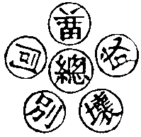

珂
(苦何切)。
大方廣佛新華嚴經合論卷第五十七
十地品第二十六之五
【經】佛子菩薩摩訶薩隨順如是大慈大悲以深重心住初地時於一切物無所恡惜求佛大智修行大捨凡是所有一切能施所謂財穀倉庫金銀摩尼真珠琉璃珂貝璧玉珊瑚等物珍寶瓔珞嚴身之具象馬車乘奴婢人民城邑聚落園林臺觀妻妾男女內外眷屬及餘所有珍玩之具頭目手足血肉骨髓一切身分皆無所惜為求諸佛廣大智慧是名菩薩住於初地大捨成就佛子菩薩以此慈悲大施心為欲救護一切眾生轉更推求世出世間諸利益事無疲厭故即得成就無疲厭心得無疲厭心已於一切經論心無怯弱無怯弱故即得成就一切經論智獲是智已善能籌量應作不應作於上中下一切眾生隨應隨力隨其所習如是而行是故菩薩得成世智成世智已知時知量以慚愧莊嚴勤修自利利他之道是故成就慚愧莊嚴於此行中勤修出離不退不轉成堅固力得堅固力已勤供諸佛於佛教法能如說行佛子菩薩如是成就十種淨諸地法所謂信慈悲喜捨無有疲厭知諸經論善解世法慚愧堅固力供養諸佛依教修行。
【論】第八佛子菩薩摩訶薩已下有二十一行半經明入初地菩薩隨順大慈大悲行施分釋義中分為四段此是初地中第八地相一佛子已下至凡是所有一切能施有兩行半經明一切能捨分二所謂已下至是名菩薩住於初地大施成就有五行半經明此位中為求佛智故於身命財無恡惜分於此段中其施有三一財寶施二象馬妻子施三頭目眼耳身肉施三佛子菩薩以此慈悲已下至於佛教法能如說行有十行經明此位菩薩成前施已得十種利益分一明大慈悲大施所緣二明所施為求正法所為救眾生故三求出世智無疲勞心四於一切經論無怯弱心五善籌量上中下眾生隨力而行成世間智分六慚愧莊嚴修自利利他之道七勤修無退八成堅固力九供養諸佛十於佛教法隨說能行四佛子已下至依教修行有兩行半經明總結成就十種淨諸地法分具如經如此段中已如上信慈悲喜捨無有疲厭知諸經論善解世法慚愧堅固力供養諸佛教以教修行以為法門淨治行地以檀度為體餘九為伴。
【經】佛子菩薩住此歡喜地已以大願力得見多佛所謂見多百佛多千佛多百千佛多億佛多百億佛多千億佛多百千億佛多億那由他佛多百億那由他佛多千億那由他佛多百千億那由他佛悉以大心深心恭敬尊重承事供養衣服飲食臥具醫藥一切資生悉以奉施亦以供養一切眾僧以此善根皆悉迴向無上菩提佛子此菩薩因供養諸佛故得成就眾生法以前二攝攝取眾生謂布施愛語後二攝法但以信解力故行未善通達是菩薩十波羅蜜中檀波羅蜜增上餘波羅蜜非不修行但隨力隨分是菩薩隨所勤修供養諸佛教化眾生皆以修行清淨地法所有善根悉以迴向一切智地轉轉明淨調柔成就隨意堪用佛子譬如金師善巧鍊金數數入火轉轉明淨調柔成就隨意堪用菩薩亦復如是供養諸佛教化眾生皆為修行清淨地法所有善根悉以迴向一切智地轉轉明淨調柔成就隨意堪用。
【論】第九佛子菩薩住此歡喜地已下有十八行半經明以大願力得見多百千萬億佛及行四攝攝眾生分釋義中分為三段一佛子已下至迴向無上菩提有七行半經明以願力得見多百千佛并及悉承事供養分二佛子已下至隨意堪用有七行經明因供養佛獲勝益分三佛子已下又至隨意堪用有四行經明金師鍊金數數入火喻菩薩修行轉增上分此一段如文自具。
【經】佛子菩薩摩訶薩住於初地應從諸佛菩薩善知識所推求請問於此地中相及得果無有厭足為欲成就此地法故亦應從諸佛菩薩善知識所推求請問第二地中相及得果無有厭足為欲成就彼地法故亦應如是推求請問第三第四第五第六第七第八第九第十地中相及得果無有厭足為欲成就彼地法故是菩薩善知諸地障對治善知地成壞善知地相果善知地得修善知地法清淨善知地地轉行善知地地處非處善知地地殊勝智善知地地不退轉善知淨治一切菩薩地乃至轉入如來地佛子菩薩如是善知地相始於初地起行不斷如是乃至入第十地無有斷絕由此諸地智光明故成於如來智慧光明佛子譬如商主善知方便欲將諸商人往詣大城未發之時先問道中功德過失及住止之處安危可不然後具道資糧作所應作佛子彼大商主雖未發足能知道中所有一切安危之事善以智慧籌量觀察備其所須令無乏少將諸商眾乃至安隱到彼大城身及眾人悉免憂患佛子菩薩商主亦復如是住於初地善知諸地障對治乃至善知一切菩薩地清淨轉入如來地然後乃具福智資糧將一切眾生經生死曠野險難之處安隱得至薩婆若城身及眾生不經患難是故菩薩常應匪懈勤修諸地殊勝淨業乃至趣入如來智地佛子是名略說菩薩摩訶薩入菩薩初地門廣說則有無量無邊百千阿僧祇差別事。
【論】第十佛子菩薩摩訶薩已下有二十八行半經明菩薩入初地時善問地地次第進修對治障礙分釋義中約分為三段一佛子已下至成於如來智慧光明有十四行經明菩薩入初地已更求此地及十地入如來地相因果分二佛子已下至悉免憂患有六行半經明以商主所往大城喻菩薩問於諸地行相安危一時齊備所資具分三佛子已下至百千阿僧祇差別事有七行半經明菩薩修行善知地相安危主導眾生令得無礙解脫如商主分。
【經】佛子菩薩摩訶薩住此初地多作閻浮提王豪貴自在常護正法能以大施攝取眾生善除眾生慳貪之垢常行大施無有窮盡布施愛語利益同事如是一切諸所作業皆不離念佛不離念法不離念僧不離念同行菩薩不離念菩薩行不離念諸波羅蜜不離念諸地不離念力不離念無畏不離念不共佛法乃至不離念具足一切種一切智智復作有念我當於一切眾生中為首為勝為殊勝為妙為微妙為上為無上為導為將為帥乃至為一切智智依止者是菩薩若欲捨家於佛法中勤行精進便能捨家妻子五欲依如來教出家學道既出家已勤行精進於一念頃得百三昧得見百佛知百佛神力能動百佛世界能過百佛世界能照百佛世界能教化百佛世界眾生能住壽百劫能知前後際各百劫事能入百法門能示現百身於一一身能示百菩薩以為眷屬若以菩薩殊勝願力自在示現過於是數百劫千劫百千劫乃至百千億那由他劫不能數知爾時金剛藏菩薩欲重宣其義而說頌曰。
【論】第十一佛子菩薩摩訶薩已下有二十行半經明菩薩入位授職分釋義云是正答前所問佛菩薩善知識初地及十地因果分於此段中復分為二第一從初佛子已下至一切智智有八行經於中大意有五一正舉初地之果二明能護持正法三明所行四攝之行四明一切所作不離念佛法僧五明不離念具一切種一切智智如一切種者是以加行大願助成大悲種故一切智智如前已明又起大志樂修一切智及差別智廣行大悲種由薰修所生如一切智由定顯發故差別智由依師教先達者修學方成皆依根本智而有或因自根力上上觀達得明解之徒必藉師教第二復作是念已下至而說頌曰有十二行經明此位菩薩能捨家妻子修出家法得見百佛境界法門分於此十二行半經中大意有八一堪與眾生為首二堪與求一切智及差別智者為依止三明難捨能捨四明出家勤行精進五明所得三昧有百六明依報見佛之數七明以願力見佛增廣八明重說其頌如上見多百佛者即是華藏智境一佛剎海融十方諸佛剎海互參徧徹之多百非如三千大千世界佛境限之百佛故乃至身塵毛孔等周法界虗空界之百也不可如情所知之百佛故此是智境無限中多百但以安立隨位昇進之法明其升進然其一一佛境不可存其中邊量見但得自觀身智境無中邊見何得論佛境有邊量見此初地中間十地及如來地法為一地通修十地及佛地法故此中因果依十迴向中佛果名妙以十地但成就十迴向中大願海令滿彼大願行故亦不離初信心中金色世界不動智佛文殊師利普賢等行如經頌云佛子始發生如是妙寶心則超凡夫位入佛所行處。
【經】
若人集眾善 具足白淨法 供養天人尊
隨順慈悲道 信解極廣大 志樂亦清淨
為求佛智慧 發此無上心 淨一切智力
及以無所畏 成就諸佛法 救攝羣生眾
為得大慈悲 及轉勝法輪 嚴淨佛國土
發此最勝心 一念知三世 而無有分別
種種時不同 以示於世間 略說求諸佛
一切勝功德 發生廣大心 量等虗空界
悲先慧為主 方便共相應 信解清淨心
如來無量力 無礙智現前 自悟不由他
具足同如來 發此最勝心 佛子始發生
如是妙寶心 則超凡夫位 入佛所行處
生在如來家 種族無瑕玷 與佛共平等
決成無上覺 纔生如是心 即得入初地
志樂不可動 譬如大山王 多喜多愛樂
亦復多淨信 極大勇猛心 及以慶躍心
遠離於鬬淨 惱害及瞋恚 慚敬而質直
善守護諸根 救世無等者 所有眾智慧
此處我當得 憶念生歡喜 始得入初地
即超五怖畏 不活死惡名 惡趣眾威德
以不貪著我 及以於我所 是諸佛子等
遠離諸怖畏 常行大慈愍 恒有信恭敬
慚愧功德備 日夜增善法 樂法真實利
不愛受諸欲 思惟所聞法 遠離取著行
不貪於利養 唯樂佛菩提 一心求佛智
專精無異念 修行波羅蜜 遠離諂虗誑
如說而修行 安住實語中 不汙諸佛家
不捨菩薩戒 不樂於世事 常利益世間
修善無厭足 轉求增勝道 如是好樂法
功德義相應 恒起大願心 願見於諸佛
護持諸佛法 攝取大仙道 常生如是願
修行最勝行 成熟諸羣生 嚴淨佛國土
一切諸佛剎 佛子悉充滿 平等共一心
所作皆不空 一切毛端處 一時成正覺
如是等大願 無量無邊際 虗空與眾生
法界及涅槃 世間佛出興 佛智心境界
如來智所入 及以三轉盡 彼諸若有盡
我願方始盡 如彼無盡期 我願亦復然
如是發大願 心柔耎調順 能信佛功德
觀察於眾生 知從因緣起 則興慈念心
如是苦眾生 我今應救脫 為是眾生故
而行種種施 王位及珍寶 乃至象馬車
頭目與手足 乃至身血肉 一切皆能捨
心得無憂悔 求種種經書 其心無厭倦
善解其義趣 能隨世所行 慚愧自莊嚴
修行轉堅固 供養無量佛 恭敬而尊重
如是常修習 日夜無懈倦 善根轉明淨
如火鍊真金 菩薩住於此 淨修於十地
所作無障礙 具足不斷絕 譬如大商主
為利諸商眾 問知道險易 安隱至大城
菩薩住初地 應知亦如是 勇猛無障礙
到於第十地 住此初地中 作大功德王
以法化眾生 慈心無損害 統領閻浮地
化行靡不及 皆令住大捨 成就佛智慧
欲求最勝道 捨己國王位 能於佛教中
勇猛勤修習 則得百三昧 及見百諸佛
震動百世界 光照行亦爾 化百土眾生
入於百法門 能知百劫事 示現於百身
及現百菩薩 以為其眷屬 若自在願力
過是數無量 我於地義中 略述其少分
若欲廣分別 億劫不能盡 菩薩最勝道
利益諸羣生 如是初地法 我今已說竟
【論】第十二若人集眾善已下有四十六行半經頌前之法分如文自具夫驗經所說入此初地法乃至是創始具足凡夫能發廣大願行能趣入故非是由因地前行解而來者意明設教備明修行滯障節級安危然發心者一時總頓修居一時一行之內非是要從節級次第來修以總別同異成壞六相法圓融可見於此六字三對法中一字有六且如人類之餘可准知如一人身具足是六相頭身手足眼耳鼻舌等用各別是別相全是一身一四大是總相一空無體是名同相不廢如是同無異性頭身手足眼耳鼻舌等用有殊是為異相頭身手足眼耳鼻舌等共成一身名為成相但隨無作緣有各無自性無體無相無生無滅無成無壞名為壞相又一切眾生名為總相愚智區分名為別相皆同佛智而有名為同相隨報業異名為異相所因作業受報得生名為成相心無所依業體無作名為壞相又十方報佛名為總相眾寶所嚴身土差別名為別相同一法身理智無二名為同相知隨行異名為異相成就眾生名為成相能所皆無無得無證名為壞相又以一智慧該收五位名為總相行解昇進名為別相同佛根本智名為同相修差別智名為異相成大菩提具普賢行名為成相智體無依用而無作名為壞相又三世久劫差別名為別相以智普觀在一剎那名為總相隨業長短名為異相情亡見盡長短時無名為同相智無依住名為壞相應根與法名為成相約舉五翻六相同異自餘一切法准此例知又明一字中有六相義互為主伴十玄義亦在此通一同時具足相應門二廣狹自在無礙門三一多相容不同門四諸法相即自在門五祕密隱顯俱成門六微細相容安立門七因陀羅網境界門八託事表法生解門九十世圓融異成門十主伴圓明具德門是其義也。
六相義

此一字中有六相一切字一切法皆有此六相若善見者得智無礙總持門於諸法不滯有無斷常等障可以離情照之可見此六字義闕一即理智不圓是此初地中觀通世間一切法門故。
第二離垢地將釋此地約作五門分別一釋地名目二明此地修何行門三明善財表法四明此地於三界中得何界解脫五隨文釋義一釋地名目者何故名為離垢地為此位治上上十善戒上上十善戒即法身性戒能自體無垢故故名離垢地也二明此地修何行門者以戒波羅蜜為主餘九波羅蜜為伴三明善財表法者善財此位中知識號普德淨光夜神此是女天在菩提場內善財得菩薩寂靜禪定樂普遊步解脫門凡是夜神河神海神地神總是女神表慈悲位明此十地蘊積大悲滿十迴向中普賢願故故天女表之名普德淨光夜神者為滿普賢願行故夜神者常居生死大夜破一切眾生長迷闇故神者其智應真號之為神此女天在菩提場內者明以法身妙理為戒體故善財得菩薩寂靜禪定樂普遊步解脫門者明以性戒徧周行齊法界不為而用對現色身常處世間不染塵垢故為名也以體用恒寂故以禪定是體遊步是用樂是法樂此神住菩提場內者為上上十善是全體菩提法身妙理又是初歡喜地婆珊婆演底夜神本發心之師明一切發心以菩提妙理為體故四明此地於三界中得何界解脫者若以菩提無作之體即三界六道總通解脫是總相義若也別相論之善知三界法差別者即以戒體能治欲界煩惱以菩提妙理現前但能觀欲界煩惱行相以菩提妙理且治欲界惑習故色無色二界三地位中修八禪定方明此色無色界行門若不如是別別修行但以菩提無作用不能簡知三界所染行法即於三界法不能了達便同聲聞外道無大智故是故此地修戒治欲界煩惱三地修八禪治色無色界煩惱初地明凡夫發心但有大志樂忻求大法故三地修八禪者明上界禪皆息想安定心而住禪菩薩不息任體自寂禪捨彼息心任理自寂稱菩提故凡上二界禪隨其淺深皆有息心想伏隨寂靜住第四禪中無出入息唯白淨妙色現前水火風三灾不至為念亡想滅無此業故唯有色界業在第五隨文釋義者於中復分為二一長科經意二隨文釋義一長科經意者於此第二地中長科為六段。
【經】
諸菩薩聞此 最勝微妙地 其心盡清淨
一切皆歡喜 皆從於座起 踊住虗空中
普散上妙華 同時共稱讚 善哉金剛藏
大智無畏者 善說於此地 菩薩所行法
解脫月菩薩 知眾心清淨 樂聞第二地
所有諸行相 即請金剛藏 大慧願演說
佛子皆樂聞 所住第二地
【論】第一諸菩薩聞此已下有五行頌明諸菩薩聞法歡喜分第二隨文釋義中從初五行頌大意有三一菩薩聞說初地法歡喜二散華稱讚三解脫月知眾又請說第二地其義如文自具。
【經】爾時金剛藏菩薩告解脫月菩薩言佛子菩薩摩訶薩已修初地欲入第二地當起十種深心何等為十所謂正直心柔耎心堪能心調伏心寂靜心純善心不雜心無顧戀心廣心大心菩薩以此十心得入第二離垢地佛子菩薩住離垢地性自遠離一切殺生不畜刀杖不懷怨恨有慚有愧仁恕具足於一切眾生有命之者常生利益慈念之心是菩薩尚不惡心惱諸眾生何況於他起眾生想故以重意而行殺害性不偷盜菩薩於自資財常知止足於他慈恕不欲侵損若物屬他起他物想終不於此而生盜心乃至草葉不與不取何況其餘資生之具性不邪婬菩薩於自妻知足不求他妻於他妻妾他所護女親族媒定及為法所護尚不生於貪染之心何況從事況於非道性不妄語菩薩常作實語真語時語乃至夢中亦不忍作覆藏之語無心欲作何況故犯性不兩舌菩薩於諸眾生無離間心無惱害心不將此語為破彼故而向彼說不將彼語為破此故而向此說未破者不令破已破者不增長不喜離間不樂離間不作離間語不說離間語若實若不實性不惡口所謂毒害語麤獷語苦他語令他瞋恨語現前語不現前語鄙惡語庸賤語不可樂聞語聞者不悅語瞋忿語如火燒心語怨結語熱惱語不可愛語不可樂語能懷自身他身語如是等語皆悉捨離常作潤澤語柔耎語悅意語可樂聞語聞者喜悅語善入人心語風雅典則語多人愛樂語多人悅樂語身心踊悅語性不綺語菩薩常樂思審語時語實語義語法語順道理語巧調伏語隨時籌量決定語是菩薩乃至戲笑尚恒思審何況故出散亂之言性不貪欲菩薩於他財物他所資用不生貪心不願不求性離瞋恚菩薩於一切眾生恒起慈心利益心哀愍心歡喜心和潤心攝受心永捨瞋恨怨害熱惱常思順行仁慈祐益又離邪見菩薩住於正道不行占卜不取惡戒心見正直無誑無諂於佛法僧起決定信佛子菩薩摩訶薩如是護持十善業道常無間斷復作是念一切眾生墮惡趣者莫不皆以十不善業是故我當自修正行亦勸於他令修正行何以故若自不能修行正行令他修者無有是處。
【論】第二爾時已下一段有四十三行經明已修初地欲向第二地捨惡行善分釋義中分為兩段第一從爾時金剛藏已下至以此十心得入離垢地有四行半經明以十心修第二地向第二佛子菩薩住離垢地已下至令他修者無有是處有三十八行經明第二地菩薩種性自身口意業調善順十善心具慈悲分十善者身無殺盜婬意無貪瞋癡口無妄言綺語惡口兩舌如欲界十善散善修色界無色界十善并修定業以息想方至。
【經】佛子此菩薩摩訶薩復作是念十不善業道是地獄畜生餓鬼受生因十善業道是人天乃至有頂處受生因又此上品十善業道以智慧修習心狹劣故怖三界故闕大悲故從他聞聲而解了故成聲聞乘又此上品十善業道修治清淨不從他教自覺悟故大悲方便不具足故悟解甚深因緣法故成獨覺乘又此上品十善業道修治清淨心廣無量故具足悲愍故方便所攝故發生大願故不捨眾生故希求諸佛大智故淨治菩薩諸地故淨修一切諸度故成菩薩廣大行又此上上十善業道一切種清淨故乃至證十力四無畏故一切佛法皆得成就是故我今等行十善應令一切具足清淨如是方便菩薩當學佛子此菩薩摩訶薩又作是念十不善業道上者地獄因中者畜生因下者餓鬼因於中殺生之罪能令眾生墮於地獄畜生餓鬼若生人中得二種果報一者短命二者多病偷盜之罪亦令眾生墮三惡道若生人中得二種果報一者貧窮二者共財不得自在邪婬之罪亦令眾生墮三惡道若生人中得二種果報一者妻不貞良二者不得隨意眷屬妄語之罪亦令眾生墮三惡道若生人中得二種果報一者多被誹謗二者為他所誑兩舌之罪亦令眾生墮三惡道若生人中得二種果報一者眷屬乖離二者親族弊惡惡口之罪亦令眾生墮三惡道若生人中得二種果報一者常聞惡聲二者言多諍訟綺語之罪亦令眾生墮三惡道若生人中得二種果報一者言無人受二者語不明了貪欲之罪亦令眾生墮三惡道若生人中得二種果報一者心不知足二者多欲無厭瞋恚之罪亦令眾生墮三惡道若生人中得二種果報一者常被他人求其長短二者恒被於他之所惱害邪見之罪亦令眾生墮三惡道若生人中得二種果報一者生邪見家二者其心諂曲佛子十不善業道能生此等無量無邊眾大苦聚是故菩薩作如是念我當遠離十不善道以十善道為法園苑愛樂安住自住其中亦勸他人令住其中。
【論】第三佛子已下一段有三十九行半經明第二地中善持上上十善分釋義中分為三段一佛子已下至如是方便菩薩當學有十四行經明此位菩薩持十善道分於此段其意有六一念十不善業是地獄餓鬼畜生二念十善業道得生三界至有頂天此十善通修非想頂總名有頂三上品十善畏苦修真得聲聞乘得出三界有為心伏盡三界煩惱入變化生死有入滅定經劫不覺四上品十善自覺緣生不具慈悲成獨覺乘亦得變化生死為根別故迴向大菩提亦經十千劫五上品十善修廣大願不捨眾生求佛大智成菩薩行六上上十善修一切種智清淨故成十力四無畏故名為最上乘已上生天及出世有此五種十善業道二佛子此菩薩摩訶薩已下至無邊眾大苦聚有二十三行經明行十不善業各有二種因果如經具明又十不善中亦有上中下三品因緣受苦不同如經自具三是故菩薩作如是念已下至令住其中有兩行經明菩薩自行十善亦教他行十善分於上上十善者明依智發心自餘三品雖皆離三界業得出三界果皆依空發心漸求佛智方入普賢願行為三乘中菩薩願行雖廣為未至佛智故皆有限量如立三千大千國土為佛報境者是以是義故與佛智中行普賢行者全別三乘以觀空及五位行門忻理至理方忻如來種智之門然更須入普賢願行即佛果在十信五位後云滿三祇方至若不迴心者元且在門外草庵上上十善一乘之門即以如來一切處不動智佛以為信心十住位中即入如來智慧之果十信五位皆以佛果大智以成行門即以如來普光明智以成十住十行十迴向十地十一地為體即佛果與普賢行同資以智體圓明出情見故非三世攝是以法華經為迴三乘令歸智海即以龍女表之此經頓示佛門即如善財所表善財雖徧巡諸友然不動足於覺母之前慈氏雖授一生成佛之功然不離一念無前後無生智海此是乘一切智乘古今見盡若情存前後不入佛智之門且住草庵止於門外論主頌曰一切眾生金色界白淨無垢智無壞智珠自在內衣中只欲長貧住門外廣大寶城住四衢文殊引導普賢扶肥壯白牛甚多力一念徧遊無卷舒如是寶乘不能入但樂勤苦門前立不覺自身常住中遣上恒言我不及。
【經】佛子此菩薩摩訶薩復於一切眾生生利益心安樂心慈心悲心憐愍心攝受心守護心自己心師心大師心作是念言眾生可愍墮於邪見惡慧惡欲惡道稠林我應令彼住於正見行真實道又作是念一切眾生分別彼我互相破壞鬬諍瞋恨熾然不息我當令彼住於無上大慈之中又作是念一切眾生貪取無厭唯求財利邪命自活我當令彼住於清淨身語意業正命法中又作是念一切眾生常隨三毒種種煩惱因之熾然不解志求出要方便我當令彼除滅一切煩惱大火安置清涼涅槃之處又作是念一切眾生為愚癡重闇妄見厚瞙之所覆故入陰翳稠林失智慧光明行曠野險道起諸惡見我當令彼得無障礙清淨智眼知一切法如實相不隨他教又作是念一切眾生在於生死險道之中將墮地獄畜生餓鬼入惡見網中為愚癡稠林所迷隨逐邪道行顛倒行譬如盲人無有導師非出要道謂為出要入魔境界惡賊所攝隨順魔心遠離佛意我當拔出如是險難令住無畏一切智城又作是念一切眾生為大瀑水波浪所沒入欲流有流無明流見流生死洄澓愛河漂轉湍馳奔激不暇觀察為欲覺恚覺害覺隨逐不捨身見羅剎於中執取將其永入愛欲稠林於所貪愛深生染著住我慢原阜安六處聚落無善救者無能度者我當於彼起大悲心以諸善根而為救濟令無灾患離染寂靜住於一切智慧寶洲又作是念一切眾生處世牢獄多諸苦惱常懷愛憎自生憂怖貪欲重械之所繫縛無明稠林以為覆障於三界內莫能自出我當令彼永離三有住無障礙大涅槃中又作是念一切眾生執著於我於諸蘊窟宅不求出離依六處空聚起四顛倒行為四大毒蛇之所侵惱五蘊怨賊之所殺害受無量苦我當令彼住於最勝無所著處所謂滅一切障礙證無上涅槃又作是念一切眾生其心狹劣不行最上一切智道雖欲出離但樂聲聞辟支佛乘我當令住廣大佛法廣大智慧佛子菩薩如是護持於戒善能增長慈悲之心。
【論】第四佛子已下有三十九行半經明第二地中起慈悲眾生分釋義中分為十段一佛子已下三十九行半經總有十種慈悲眾生心十種念眾生苦道令安在十種樂中如經自具次第十種復作是念如是身邊二見見取戒取總依邪見起故標在其首六道三界無明總依名色邪見惡慧惡欲生生死稠林故標之為首若明此諸見無體諸見即是法界緣生起唯法起見唯法見隨智而轉所緣三界六道諸不善道總由此五種生若了即是入佛知見已後諸煩惱總無有生如是五見相破壞者是離世間業因此五見而生鬬諍瞋恨如因貪便起邪命如三毒因貪起瞋癡業惡業增盛名為熾然清涼涅槃者業亡智現即樂又舉愚癡重闇妄見瞙者總明多迷障業為迷名色以障正智又舉墮地獄畜生餓鬼明由前迷障妄墮地獄此謂十八地獄十八者鑊湯鑪炭刀山劒樹黑闇寒冰火車火輪鐵網銅柱沸屎拔舌釘身吐火飲銅愚癡火城灰河等已上十八種地獄約心所作惡業處即受之入惡見網中者明眾生迷真妄取名色身見邊見戒取見取邪見常自籠網輪轉苦流愚癡稠林所迷者如一切眾生愚癡稠林所迷大要約有八萬四千大體總論一迷等虗空迷為迷自身如來普光本智慧海即等法界虗空界總迷如是愚癡廣多蔽障本智故號稠林如入位菩薩迷道愚癡隨五位上進修因果有一百以五位中各有十種波羅蜜以為昇進之行體如十住中從十信已後修方便三昧是修十住中初發心住向所謂得憶念諸佛智慧光明是正入初發心住果入海門國觀修治地住向觀察一切眾生海是清淨法界海得普眼法門是正入治地住果如是五位五十箇法門皆有二種因果都有一百箇昇進法門又以從初發心住乘自佛智經過五位見諦漸明復有五因有五箇果此約本五位上立通為十都有一百一十法門皆有迷障愚癡等法一如善財童子舉行所彰待至彼位具明如是名為隨位進修未得自在愚癡直至佛果所謂算數廣大愚隨好光明功德分量廣大愚唯佛窮果方始了知如阿僧祇品隨好光明功德品如來自說者是如是隨地位中進修迷障至善財表法知識一一對行具明令易解故隨逐邪道有九十五種諸邪道故又一切眾生人天魔梵聲聞緣覺淨土菩薩皆是邪道但為苦樂不同皆非正見行顛倒行者四倒八倒等是猶如盲人無有導師者明菩薩觀迷起悲求出要道惠濟羣品已下可知入魔境界者五蘊魔煩惱魔死魔天魔是也惡賊所攝者六根逐境起諸邪見是也隨順魔心遠離佛意者明根隨境變迷自佛智故我拔出如是險難令住無畏一切智城者明念苦興悲令達本智故又作是念一切眾生為大瀑水波浪所沒者明因愛水所沒故入欲流有流無明流見流生死洄澓者明總因愛河漩流漂轉故湍馳奔激不暇觀察者明前四流迅速逐境從見起諸妄業無暇起觀而調伏之故為欲覺恚覺害覺隨逐不捨者明此三種惡作流依身見羅剎於中執將永入愛欲稠林故明因身等五見俱生六十二見齊起六十二見者依婆沙說五蘊中各起四見四五二十三世各二十通為六十通身即是神身異神二見總為六十二見且於色蘊中即色是我離色非我我中有色色中有我五蘊中各具有此四如是諸見皆依身見所起是故此經云無身亦無見得佛無上身將入愛欲稠林者明一切生死皆從愛欲所生故為生死多故如稠林一剎那間八百生滅心齊起流注不絕剎那時盡生滅齊無於所貪愛深生染著者明深作生死苦業轉轉不休故我慢原阜者慢有七憍慢慢慢過慢卑慢我慢增上慢邪慢原阜者明慢上更加慢及過慢等名之曰阜如世平地更有高地其上平坦曰原原上更高為堆堆上更高為阜明我慢上加六重慢此為重阜也定六處聚落者憍慢原阜上更加眼耳鼻舌身意取著名色境增長苦因已下十四行經如文可解此十段經明此地中觀苦起悲救護分。
大方廣佛新華嚴經合論卷第五十七